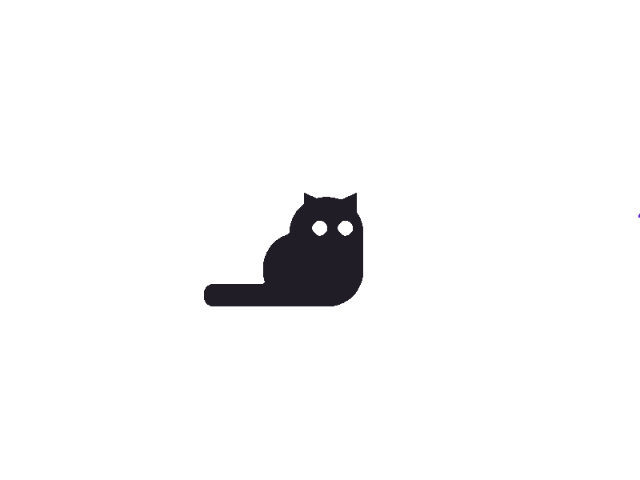

Store your secrets. Simply.
01 — Vision
Passwords shouldn't live in a sticky note on your monitor, a notes app with zero encryption, or a browser that sells your data. Scratchpad is a local-first desktop password manager. It has no cloud, no subscriptions, no third-party servers. Your secrets stay on your machine, secure and within reach.
Move cursor around
02 — Target Users
"I keep resetting my school passwords because I can't remember them."
"I manage lots of accounts and need one place to keep track of them."
ScratchPad is built for anyone who struggles to keep track of multiple usernames and passwords. Whether you're a student managing school accounts, a professional handling work logins, or an everyday user with numerous online services, ScratchPad provides a simple, organized place to store and access your credentials locally.
"I just want a simple app that lets me find my login information quickly"
03 — Features
Secure Storage
All credentials are stored locally inside a database. Your vault never touches the internet.
Instant Search
Filter through your accounts in real time. No lag, no cloud round-trips.
Show / Hide Toggle
Reveal passwords on demand with a single click. Hidden by default, always.
One-Click Copy
Copy usernames and passwords to clipboard without ever revealing them on screen.
Edit & Delete
Update credentials inline in the dashboard. Changes are saved immediately.
Local-First
No account creation. No sync. No vendor lock-in. Just you and your vault.
04 — Team
@FULLSTACK
CONTRIBUTIONS
Iteration 0 — Took charge on initializing the project repository, README and gradle config. Added features, tasks and user stories.
Iteration 1 — Set up the main dashboard UI frame and unit tests, developed full vertical slices for account adding, set up validation logic and did code reviews. Created the architecture diagram. Contributed to the worksheet.
Iteration 2 — Refactored AppStart, password validation and associated tests and error messages. Added a class to collect exception messages, developed a full vertical slice of the search bar. Set up Mockito for unit tests, addressed tech debt and did code reviews. Updated the architecture diagram. Contributed to the worksheet.
Iteration 3 — I acted as a codebase maintainer by completing many refactoring tasks to eliminate code smells and reduce technical debt. Assisted in design and development of the sorting strategy. Updated the architecture diagram and readme. Did code reviews and co-authored end-to-end tests with Daniel. Contributed to the worksheet.
Technical Skills Developed — One of the most valuable technical skills I learned this term was how to write proper tests. I gained an understanding of the roles and tradeoffs of unit, integration and end-to-end tests, as well as when to use stubs, fakes and mocks to build deterministic, isolated test suites. Also, working firsthand with n-tier architecture gave me insight into system design and how to enforce clear boundaries and separation of concerns.
@BACKEND/UI
CONTRIBUTIONS
Iteration 0 — Contributed to user stories and features, set up the time estimates for issues.
Iteration 1 — Implemented the clipboard features, worked on the final code review and sorting features.
Iteration 2 — Worked on the complete UI code refactoring and finished the first version of sorting logic.
Iteration 3 — Implemented password generation and cleaned the code formatting and comment.
Technical Skills Developed — One of the most valuable technical skills I developed this term was working within an Agile workflow end-to-end, from writing user stories and estimating issues to delivering features across iterative sprints. Implementing clipboard integration and password generation logic gave me hands-on experience with system APIs and algorithmic thinking. I also deepened my understanding of software quality through participating in code reviews and taking ownership of a full UI refactoring, which taught me how to identify structural inefficiencies and improve readability without breaking existing functionality. Finally, designing and refining sorting logic across multiple iterations gave me insight into the importance of incremental development and revisiting earlier work with fresh perspective.
@UI/UX
CONTRIBUTIONS
Iteration 0 — Wrote the README and retrospective.
Iteration 1 — Designed the login view, created the logo, and set up the presentation layer file structure.
Iteration 2 — Built and styled the dashboard, restructured and cleaned up the CSS file, and created the add account view.
Iteration 3 — Removed the old login flow, refactored the dashboard view, restyled the entire UI, recorded and edited the demo video, and built the project website. Also managed worksheet submissions and restructuring throughout all iterations.
Technical Skills Developed — One of the most valuable technical skills I developed this term was translating design intent into functional UI. Starting from logo creation and login view design in early iterations, to building and styling a full dashboard with a structured CSS architecture. Taking ownership of a complete UI restyle in the final iteration taught me how to approach visual consistency at scale and refactor presentation logic without disrupting existing functionality. I also gained experience in front-end file organization, maintaining a clean and scalable presentation layer across a growing codebase. Beyond the UI work, producing and editing the demo video and building the project website gave me practical exposure to technical communication and project documentation. Managing worksheet submissions across all iterations further developed my organizational skills within an Agile team setting.
@BACKEND
CONTRIBUTIONS
Iteration 0 — Set up the repository for our group. Planned our persistence interface, so we could start working immedietly when itteration 1 started. Helped plan our fetures and user stories.
Iteration 1 — Implemented the entire persistence layer, made IAccountRepository and FakeAccountRepository. Created the Account model that represents an account that is saved into the app. Implemented the Delete button, and the service asociated with it.
Iteration 2 — Designed the database schema Implemented SQLCipher (SQLite + AES encryption) database and created an AccountRepositroy that works for any passowrd protected relational database Worked on integration tests
Iteration 3 — Refactored the way the system handles sorting to decouple the sorting modes from the sorting service. Helped improve and add more unit tests. Fixed Database issues. Setup a builder pattern for the Account model to improve code readiablility.
Technical Skills Developed — One of the most valuable technical skills I developed this term was designing and implementing a full persistence layer from the ground up. Starting with a planned interface and fake repository for early development, then replacing it with a real encrypted database using SQLCipher (SQLite with AES encryption). This gave me deep insight into repository pattern design, interface-driven development, and how to write persistence code that is swappable and testable. Working on integration tests alongside the database implementation also taught me how to verify that system layers communicate correctly under real conditions. In later iterations, refactoring the sorting logic to decouple sorting modes from the service layer and introducing a builder pattern for the Account model gave me hands-on experience with software design principles like separation of concerns and readability-focused architecture.
@TESTING
CONTRIBUTIONS
Iteration 0 — Contributed feature ideas and user stories during project planning; served as project coordinator to align team direction.
Iteration 1 — Tracked time and estimates across all issues; developed and tested branches #29 and #31; resolved issue #9 per feedback; completed Worksheet 1.
Iteration 2 — Refactored broad exception handling and stack traces from the UI (#50); fixed password length validation bypass on edit (#46); implemented most recently accessed (#31) and most used (#29) account features; completed Worksheet 2.
Iteration 3 — Authored two end-to-end tests with Garrett; implemented delete confirmation dialog (#42); patched copy-from-revealed-field bug (#10); completed Worksheet 3 and produced the demo video.
Technical Skills Developed — One of the most valuable technical skills I developed this term was writing end-to-end tests, which gave me a practical understanding of how to verify user-facing behaviour across the full application stack. Fixing bugs like the password length validation bypass and the copy-from-revealed-field issue sharpened my ability to trace subtle logic errors and think critically about edge cases in user input handling. Refactoring broad exception handling out of the UI layer deepened my understanding of separation of concerns and how error management should be structured across application tiers. Implementing features like most recently accessed and most used accounts also gave me experience designing lightweight usage-tracking logic within an existing architecture. Beyond the technical work, tracking time and estimates across all issues throughout the project developed my awareness of scope and effort, and producing the demo video gave me practice communicating technical work clearly to an outside audience.
05 — Demo
06 — Reflect
Major Issue: It's always an OCP violation.
The Issue: Our business-layer implementation of sorting accounts by a specified field. In our first iteration, the presentation layer passed strings to the business layer which routed them through a switch statement to apply the corresponding sorting logic. However, as we learned about code smells and design patterns we realized this was a significant OCP violation, because adding a new sorting mode required modifying both the frontend constants and the backend switch statement.
The Change: We refactored the system to use to an enum-driven strategy and registry design pattern. The registry simply maps each sorting enum to a specific Account wrapper class that implements Comparable. Now, the sorting function simply retrieves the appropriate wrapper from the registry to wrap each Account, and invokes Collections.sort() on the list of wrapped Accounts. This addressed the OCP violation as now adding a new sorting criteria only requires creating a new wrapper class and registering it, leaving the core sorting logic untouched.
Successes:
1. Our team held regular group meetings each week to discuss tasks and planning for each iteration. During these meetings, we reviewed grader feedback and balanced related refactoring tasks alongside new feature development. These regular meetings kept us on track, gave us space to share any blockers we might have been facing, and contributed to maintaining a clear line of communication about the general direction of the project.
2. Our team maintained a healthy culture that translated into a willingness to refactor combined with open communication, which encouraged continuous improvements to existing code. Throughout all iterations, we were able to openly discuss design decisions, acknowledge mistakes and process feedback well. For example, we recognized that our scope was too large through iteration 1 and iteration 2 as we added many new features without fully considering the design decisions behind them. As a result, iteration 3 consisted mostly of polishing and refactoring in all layers which led us to have a final product that we are proud of.
Failures:
1. Due to the amount of feedback we received, balancing new feature development and refactoring was a constant challenge. This sometimes resulted in complex merge requests. If a new feature interacted with an existing class that was undergoing a refactor, resolving conflicts became a major bottleneck. To mitigate this, we should have broken down refactoring tasks into smaller sub-tasks and completed them earlier in the sprint, minimizing architectural differences between our feature branches and the main codebase.
2. Underestimated timelines in the compressed course schedule led to rushed code reviews. Consequently, hard-coded strings, styling differences, minor bugs and technical debt slipped into the main codebase unnoticed. This intensified with larger commits, due to the Law of Triviality. With more time, we would have preferred to have a number of people reviewing code which would allow us to nitpick styling and code smells. This would have resulted in less refactoring and clean-up on the final day of iteration 3. Ultimately, we experienced the saying “Ask a programmer to review 10 lines of code, they’ll find 10 issues. Ask a programmer to review 500 lines of code, they’ll say ‘looks good.’”
Changes: What would we change next time?
1. Reviewing our iteration 1 submission and feedback, we realized that we focused too much on feature breadth rather than architectural depth and robustness. By implementing too many features at once, we ended up with a semi-functional system that lacked a solid foundation. This resulted in us having to do many rounds of refactoring in future iterations.
2. For example, in iteration 1 we had all CRUD functionality, alongside account sorting. AccountService handled both persistence workflows and sorting logic, which violated the Single Responsibility Principle. This was a clear example of disregarding proper separation of concerns across our service layer. If we were to start over, we would instead narrow our initial scope and focus on implementing a small set of features to a high standard that would minimize future refactors.